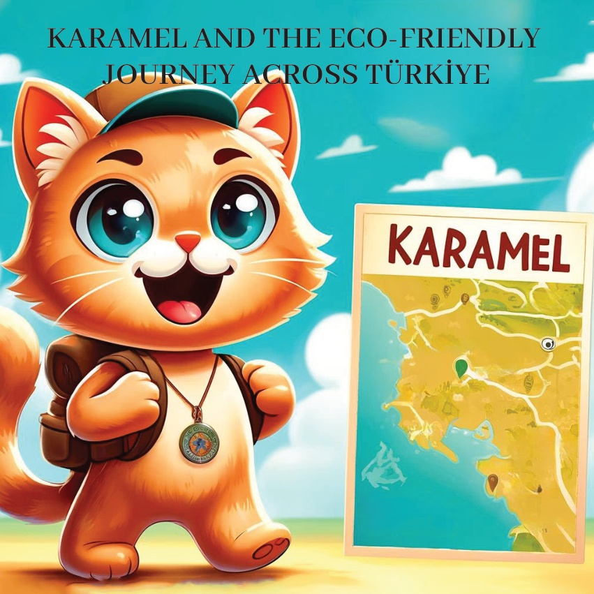
1

2

3
کارميل، پر خطر کرنے والی چھوٹی بلی،
Türkiye میں دوست کے لحاظ سے ماحول دوست طریقوں اور پائیدار زندگی کے بارے میں جاننا چاہتی تھی۔
اپنے دل میں پرجوش ہو کر،
وہ ملک بھر میں مختلف ماحول دوست اقدامات کی 탐험 کے لیے سفر پر نکلی۔
4
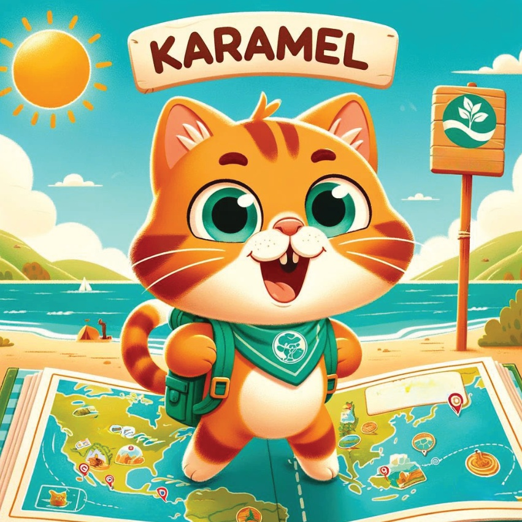
5
مرمرة علاقہ –
برصہ میں ایک ارگانک فارم
کارملی کی پہلی منزل تھی۔
وہ برصہ میں ارگانک فارمنگ کے طریقوں کے بارے میں جانتی ہے۔
زراعی البلدوں کی پودے لگانے میں مدد کی۔
اور تازہ،
توانائی بخش پیداوری سے لطف اندوز ہوئی۔
6
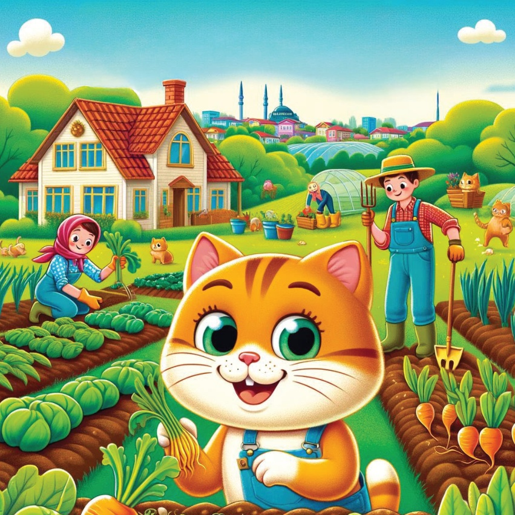
7
ایجیئن علاقہ –
イズмір میں सौर ऊर्जा منصوبہ
بعد ازیں کارامل نے
イズмір میں ایک सौर ऊर्जा منصوبے کا دورہ کیا۔
اس نے سیکھا کہ सौर पॅनेल سورج کی روشنی کو توانائی میں کیسے تبدیل کرتے ہیں اور دیکھا کہ یہ تجدید پذیر توانائی کا ذریعہ
بینوا اور کاروبار کو کیسے بجلی فراہم کرتا ہے۔
8
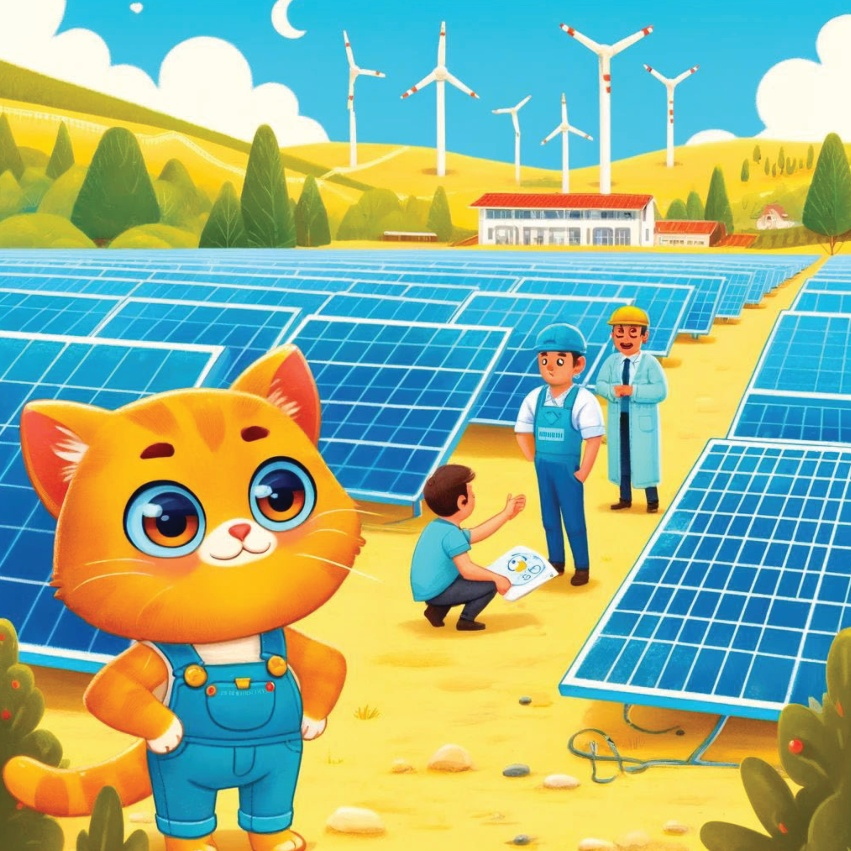
9
میڈیٹرن регіон –
دالین میں سلو مرے کی الواح کا تحفظ
دالین میں، کارمل نے ایک سلو مرے کے تحفظ کے منصوبے میں شمولیت اختیار کی۔
اس نے دل خطرے سے دوچار کیریٹا کیریٹا سلو مرے کے انڈے دینے کے مقامات کے تحفظ میں مدد کی اور سمندر کے تحفظ کے بارے میں جاننا سیکھا۔
10
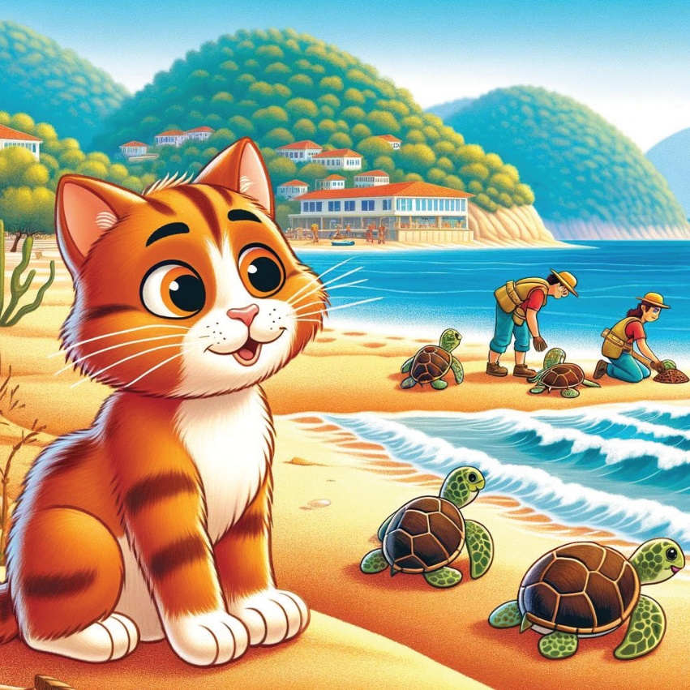
11
مرکزی اناطولیا علاقہ –
قونیا میں ونڈ فارم
کارامل پھر قونیا جانے کے لیے روانہ ہوئی۔
وہ وہاں ایک ونڈ فارم دیکھے،
اور سیکھا کہ ہوا کی توانائی کو کیسے استعمال کر کے بجلی پیدا کی جاتی ہے۔
12
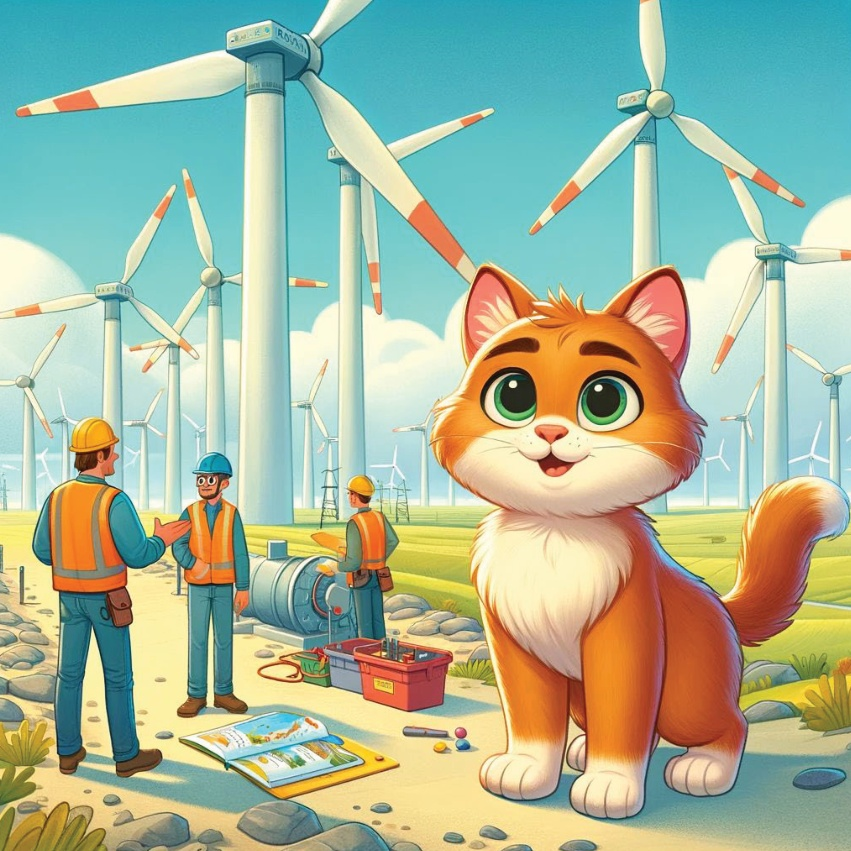
13
سیاہ سمندر علاقہ –
آرتوین میں پائیدار جنگلاتی انتظام
آرتوین میں، کرملی نے پائیدار جنگلاتی انتظام کے بارے میں جانا۔
وہ دیکھتی ہے کہ کس طرح جنگلات کو محفوظ کیا جاتا ہے
اور بیولوجیکل різноманітності کو برقرار رکھنے اور جنگلгети کو روکنے کے لیے انتظام کیا جاتا ہے۔
14
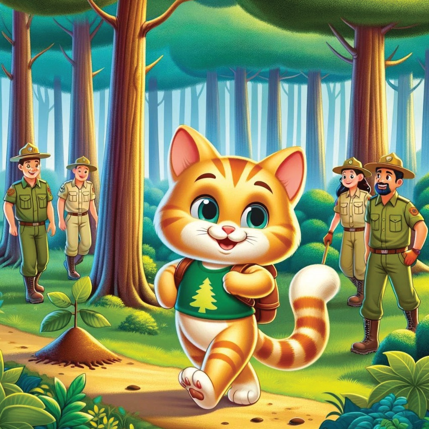
15
ایسٹर्न اناطولیا علاقہ –
ازروم میں زمین کی گرمی سے حاصل توانائی
کارامل کی اگلی منزل ازروم تھی، جہاں اس نے ایک زمین گرمی توانائی کے کارخانے کا دورہ کیا۔
اس نے سیکھا کہ زمین کی گرمی کو صاف توانائی پیدا کرنے کے لیے کیسے استعمال کیا جاتا ہے۔
16
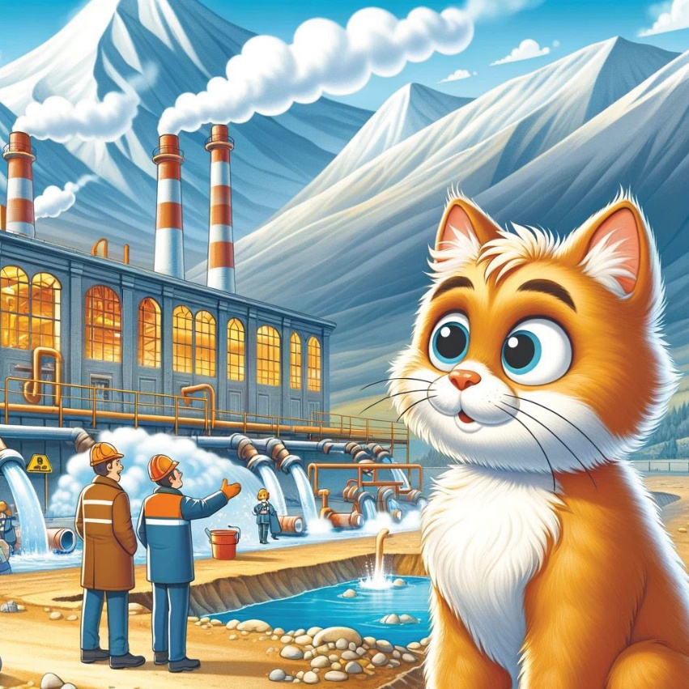
17
جنوب مشرقی اناطولیا علاقہ –
مardin میں پانی کے انتظام کے منصوبے
آخرکار، کارامل نے مardin کے پانی کے انتظام کے منصوبوں کے بارے میں جاننے کے لیے وہاں وزٹ کیا۔
وہاں اسýchیٹ irrigation systems اور بارش کے پانی کے جمع کرنے سے اس خشک علاقے میں پانی کیسے محفوظ ہوتا ہے، اسے دیکھا۔
18
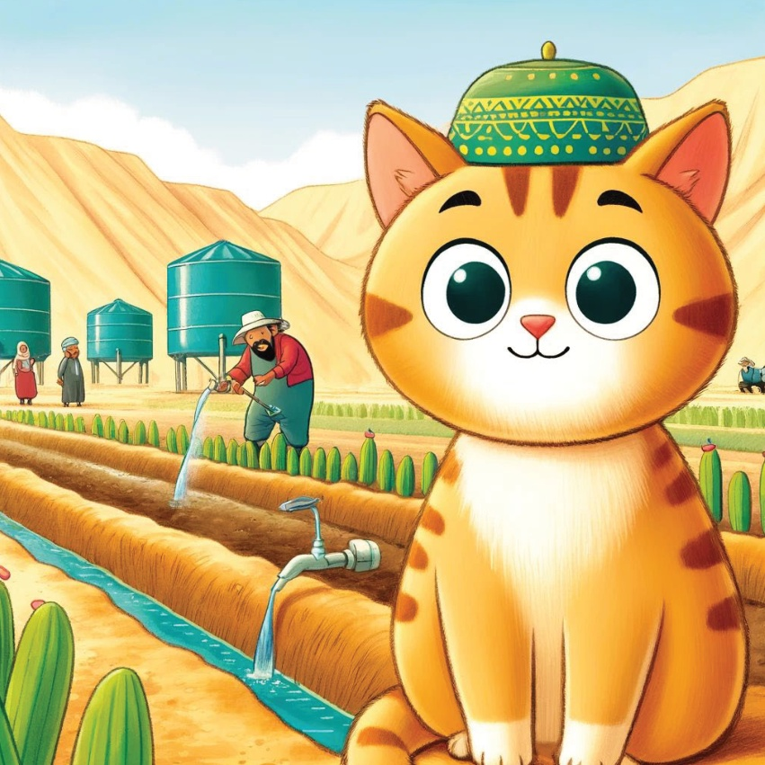
19
اپنے دل میں علم اور ماحول دوست طریقوں سے متاثر ذہن کے ساتھ، کارمل اپنے گھر واپس آئی۔ اس نے محسوس کیا کہ ماحول کے تحفظ میں چھوٹے اقدامات ایک بڑا فرق کر سکتے ہیں۔
20
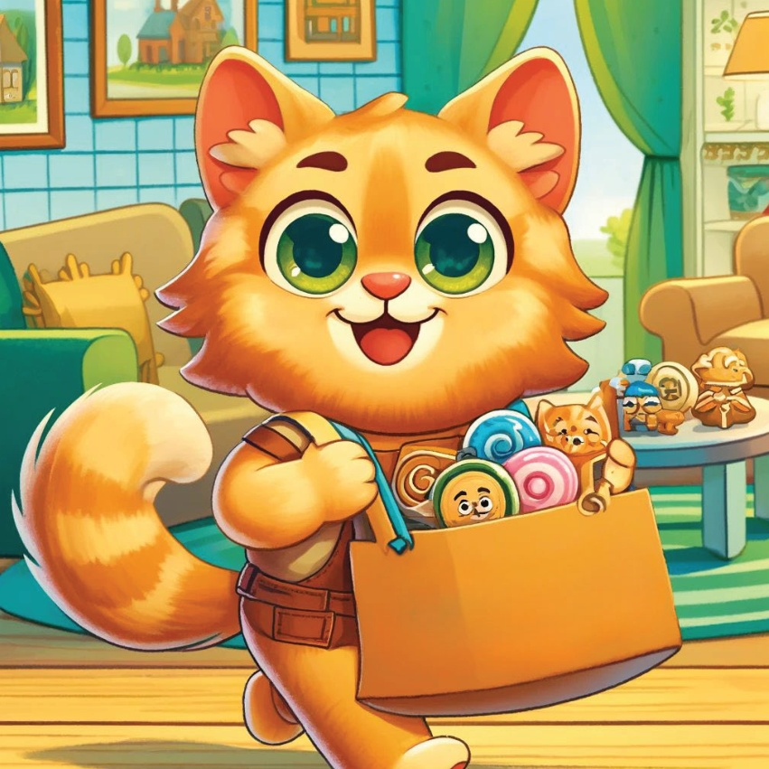
21
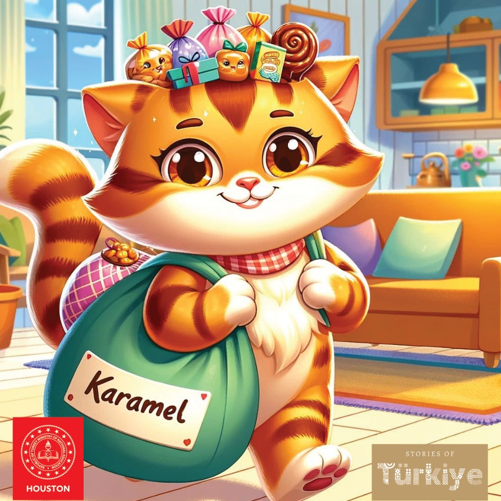
22